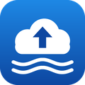

Respaldo PiHerramienta personal para respaldar automáticamente el directorio de usuario de mi Raspberry Pi en mi propia cuenta de Google Drive, usando rclone.
Los archivos se cifran antes de subirse. La herramienta solo accede a la cuenta de Google Drive de su propietario y no es un servicio público.
Contacto: rios.raspberrypi@gmail.com